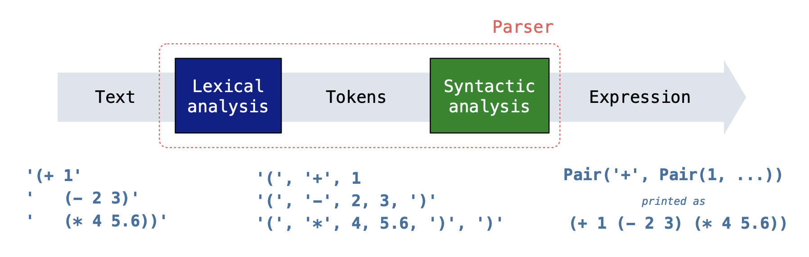
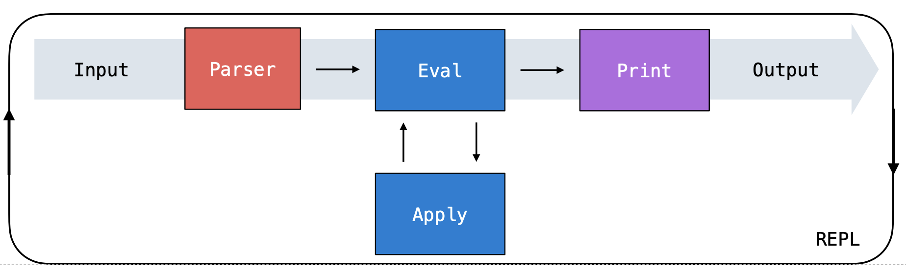

实验 10 解答
参考答案
概念自测
- 对 Scheme 表达式求值分为哪三个步骤？
- 首先求值运算符（检查它是否存在于当前框架中），然后求值操作数，最后把运算符应用到操作数上。
- 宏的目的是什么？
- Scheme 中的宏让你可以在代码运行之前修改代码，从而创建自己的命令。
- 为什么尾递归在 Scheme 中是有益的？
- 尾递归之所以有益，是因为它允许关闭将来不会再被使用的框架，从而节省空间。
必做题
准引用
如果你需要温习准引用（quasiquotation），可以查看下拉框。你也可以直接跳到题目部分，卡住了再回到这里查阅。
普通引用 ' 和准引用 ` 都是引用表达式的有效方式。不过，准引用的表达式可以用 "unquote" ,（即逗号）来取消引用。当准引用表达式中的某一项被取消引用时，这一项会被求值，而不再被当作字面文本。这个机制有点类似 Python 中的 f-string：其中 {} 内的表达式会被求值并插入到字符串中。
scm> (define a 5)
a
scm> (define b 3)
b
scm> `(* a b) ; Quasiquoted expression
(* a b)
scm> `(* a ,b) ; Unquoted b, which evaluates to 3
(* a 3)
scm> `(* ,(+ a b) b) ; Unquoted (+ a b), which evaluates to 8
(* 8 b)Q1：WWSD：准引用
用 ok 回答下面的「Scheme 会输出什么？」题目：
python3 ok -q wwsd-quasiquote -u
scm> '(1 x 3)
(1 x 3)
scm> (define x 2)
x
scm> `(1 x 3)
(1 x 3)
scm> `(1 ,x 3)
(1 2 3)
scm> `(1 x ,3)
(1 x 3)
scm> `(1 (,x) 3)
(1 (2) 3)
scm> `(1 ,(+ x 2) 3)
(1 4 3)
scm> (define y 3)
y
scm> `(x ,(* y x) y)
(x 6 y)
scm> `(1 ,(cons x (list y 4)) 5)
(1 (2 3 4) 5)解释器
建议在做下面这些题目时查阅 Calculator 下拉框。如果你需要温习解释器相关内容，可以查看其他下拉框。你也可以直接跳到题目部分，卡住了再回到这里查阅。
解释器是一种程序，它让你能够使用某种特定的语言与计算机交互。它接收你编写的代码，对其进行解释，然后执行相应的操作，通常还会借助更底层的语言与计算机硬件通信。
在 Project 4 中，你将用 Python 为 Scheme 编程语言开发一个解释器。有意思的是，你在本课程中一直使用的 Python 解释器主要是用 C 语言编写的。在最底层，计算机通过解释机器码来工作，机器码是一连串的 0 和 1，用来指示计算机完成诸如算术运算和数据读取这类基本任务。
谈到解释器时，涉及两种语言：
- 被解释的语言：对 Project 4 来说，就是 Scheme 语言。
- 实现语言：即用来编写解释器本身的语言，对 Project 4 来说就是 Python。
REPL
解释器的一个常见特性是 Read-Eval-Print Loop（REPL，读取-求值-打印循环），它以循环的方式分三个阶段处理用户输入：
Read（读取）：解释器首先读取用户提供的输入字符串。这个输入会经历一个解析过程，其中包含两个关键步骤：
- 词法分析步骤把输入字符串拆分成 token，token 就是你所解释的语言中的基本元素或"单词"。这些 token 表示输入中最小的意义单位。
语法分析步骤接着上一步得到的 token，把它们组织成底层语言能够理解的数据结构。对于我们的 Scheme 解释器，我们会把这些 token 组装成一个
Link对象（类似于Link），用来表示原始调用表达式的结构。Link中的第一项表示调用表达式的运算符，后面的元素则是该运算所作用的操作数（参数）。注意，这些操作数本身也可以是调用表达式（即嵌套表达式）。
下面总结了读取一个 Scheme 表达式输入的过程：

Eval（求值）：这一步对你用该编程语言编写的表达式求值，从而得到一个值。它涉及以下两个函数：
eval接收一个表达式，并依据语言的规则对它求值。当表达式是一个调用表达式时，eval会使用apply函数来得到结果。它会按顺序对运算符和操作数求值。例如，对于(add 1 2)，eval会把add识别为运算符，把1和2识别为操作数。它先对add求值以确保它是一个合法的函数，然后再对1和2求值以确保它们是合法的参数。apply接收已经求值的运算符（函数），并把它作用到已经求值的操作数（参数）上。注意，在这个过程中，apply可能需要求值更多的表达式（比如函数体中的那些表达式）。这时apply就可能回调eval，因此这两个阶段是相互递归的。
- Print（打印）：显示对用户输入求值的结果。
下面展示各个部分是如何组合在一起的：

求值
要用解释器对表达式 (+ (* 3 4) 5) 求值，scheme_eval 会按以下顺序依次对这些表达式进行调用：
(+ (* 3 4) 5)+(* 3 4)*345
* 会被求值，因为它是 (* 3 4) 的运算符子表达式，而 (* 3 4) 又是 (+ (* 3 4) 5) 的操作数子表达式。
默认情况下，* 求值为一个把各参数相乘的过程。但 * 随时都可能被重新定义，因此每次使用符号 * 时都必须对它求值，以查找它当前的值。
scm> (* 2 3) ; Now it multiplies
6
scm> (define * +)
*
scm> (* 2 3) ; Now it adds
5计算器
解释器就是一个执行程序的程序。今天，我们将扩展 Calculator 的解释器，Calculator 是一种简单的人造语言，是 Scheme 的一个子集。这个 lab 就像是缩小版的 Scheme Project。
Calculator 语言只包含四种基本算术运算：+、-、* 和 /。就像在 Scheme 中一样，这些运算可以嵌套，也可以接收不同数量的参数。下面给出几个 calculator 表达式及其对应值的例子。
calc> (+ 2 2 2)
6
calc> (- 5)
-5
calc> (* (+ 1 2) (+ 2 3 4))
27Calculator 表达式用 Python 对象来表示：
- 数字使用 Python 的数字来表示。
- 算术运算的符号使用 Python 字符串表示（例如
'+'）。 - 调用表达式使用下面这个
Link类来表示。
为了在 Python 中表示 Scheme 列表，我们将使用 Link 类（本 lab 和 Scheme 项目都是如此）。一个 Link 实例有两个属性：first 和 rest。Link 总是接收两个参数来调用。要构造一个列表，就嵌套调用 Link，并把最后一个 Link 的第二个参数传入 nil。
注意：在 Python 代码中，
nil绑定到Link.empty。同样地，Scheme 中的nil求值为空列表。
例如，当我们的解释器读入 Scheme 表达式 (+ 2 3) 后，它会被表示为 Link('+', Link(2, Link(3, nil)))。
>>> p = Link('+', Link(2, Link(3, nil)))
>>> p.first
'+'
>>> p.rest
Link(2, Link(3, nil))
>>> p.rest.first
2
>>> print(p)
(+ 2 3)有一个 map_link 函数，它接收一个只带一个参数的 Python 函数 f 和一个链表 s，返回把 f 作用到该 Scheme 列表的每个元素上后得到的 Scheme 列表。
>>> map_link(lambda x: 2 * x, p.rest)
Link(4, Link(6, nil))下面是 Link 类和 map_link 函数（未展示 __str__ 和 __repr__ 方法）。
class Link:
"""Represents the built-in Link data structure in Scheme."""
empty = ()
def __init__(self, first, rest):
self.first = first
self.rest = rest
nil = Link.empty
def map_link(f, s):
"""Map function f over linked list s.
>>> square = lambda x: x * x
>>> map_link(square, Link(1, Link(2, Link(3))))
Link(1, Link(4, Link(9, nil)))
"""
if s is Link.empty:
return s
return Link(f(s.first), map_link(f, s.rest))Q2：使用 Link
请回答下列关于表示 Calculator 表达式 (+ (- 2 4) 6 8) 的 Link 实例的问题。
用 ok 检验你的理解：
python3 ok -q using_link -uCalculator 求值
对于第 3 题（New Procedure），你需要修改下面用于对 Calculator 表达式求值的 calc_eval 函数。在第 3 题中，你需要判断 Scheme 中调用表达式的运算符和操作数分别是什么，以及在 calc_apply 那一行中如何把过程作用到参数上。
def calc_eval(exp):
"""
>>> calc_eval(Link("define", Link("a", Link(1, nil))))
'a'
>>> calc_eval("a")
1
>>> calc_eval(Link("+", Link(1, Link(2, nil))))
3
"""
if isinstance(exp, Link):
operator = exp.first operands = exp.rest if operator == 'and': # and expressions
return eval_and(operands)
elif operator == 'define': # define expressions
return eval_define(operands)
else: # Call expressions
return calc_apply(calc_eval(operator), map_link(calc_eval, operands)) elif exp in OPERATORS: # Looking up procedures
return OPERATORS[exp]
elif isinstance(exp, int) or isinstance(exp, bool): # Numbers and booleans
return exp
elif exp in bindings: # Looking up variables
return bindings[exp]Q3：新过程
为 Calculator 添加 // 运算，即一个向下取整的除法过程，使得 (// dividend divisor) 返回 dividend 除以 divisor 的结果并忽略余数（即 Python 中的 dividend // divisor）。按下例所示处理多个输入：(// dividend divisor1 divisor2 divisor3) 的求值结果等同于 Python 中的 (((dividend // divisor1) // divisor2) // divisor3)。假设每次调用 // 都至少有两个参数。
提示：本题中你需要同时修改
calc_eval和floor_div两个方法！
calc> (// 1 1)
1
calc> (// 5 2)
2
calc> (// 28 (+ 1 1) 1)
14提示：确保
Link中的每个元素（运算符和所有操作数）都被calc_eval求值一次，这样我们才能正确地把相应的 Python 运算符作用到操作数上！
def floor_div(args):
"""
>>> floor_div(Link(100, Link(10, nil)))
10
>>> floor_div(Link(5, Link(3, nil)))
1
>>> floor_div(Link(1, Link(1, nil)))
1
>>> floor_div(Link(5, Link(2, nil)))
2
>>> floor_div(Link(23, Link(2, Link(5, nil))))
2
>>> calc_eval(Link("//", Link(4, Link(2, nil))))
2
>>> calc_eval(Link("//", Link(100, Link(2, Link(2, Link(2, Link(2, Link(2, nil))))))))
3
>>> calc_eval(Link("//", Link(100, Link(Link("+", Link(2, Link(3, nil))), nil))))
20
"""
result = args.first
divisors = args.rest
while divisors != nil:
divisor = divisors.first
result //= divisor
divisors = divisors.rest
return result用 ok 测试你的代码：
python3 ok -q floor_divQ4：新形式
为我们的 Calculator 解释器添加 and 表达式，并引入 Scheme 布尔值 #t 和 #f，它们分别用 Python 的 True 和 False 表示。下面的例子假设条件运算符（如 <、>、= 等）已经实现，但本题中你不必关心它们。
calc> (and (= 1 1) 3)
3
calc> (and (+ 1 0) (< 1 0) (/ 1 0))
#f
calc> (and #f (+ 1 0))
#f
calc> (and 0 1 (+ 5 1)) ; 0 is a true value in Scheme!
6在调用表达式中，我们先对运算符求值，再对操作数求值，最后把过程作用到它的参数上（就像你在上一题的 floor_div 中所做的那样）。
然而，我们不能用求值调用表达式的方式来求值 and 表达式。由于 and 是一种特殊形式，会在遇到第一个假参数时短路，因此我们需要添加特殊逻辑，避免总是对所有子表达式求值。
重要：要检查某个
val在 Scheme 中是否为假值，请使用val is scheme_f，而不是val == scheme_f，因为在 Python 中0 == False，但0 is not False（很疯狂吧！）。
scheme_t = True # Scheme's #t
scheme_f = False # Scheme's #f
def eval_and(expressions):
"""
>>> calc_eval(Link("and", Link(1, nil)))
1
>>> calc_eval(Link("and", Link(False, Link("1", nil))))
False
>>> calc_eval(Link("and", Link(1, Link(Link("//", Link(5, Link(2, nil))), nil))))
2
>>> calc_eval(Link("and", Link(Link('+', Link(1, Link(1, nil))), Link(3, nil))))
3
>>> calc_eval(Link("and", Link(Link('-', Link(1, Link(0, nil))), Link(Link('/', Link(5, Link(2, nil))), nil))))
2.5
>>> calc_eval(Link("and", Link(0, Link(1, nil))))
1
>>> calc_eval(Link("and", nil))
True
"""
curr, val = expressions, True
while curr is not nil:
val = calc_eval(curr.first)
if val is scheme_f:
return scheme_f
curr = curr.rest
return val用 ok 测试你的代码：
python3 ok -q eval_and宏
如果你需要温习宏（macro），可以查看下拉框。你也可以直接跳到题目部分，卡住了再回到这里查阅。
宏是一种代码变换，用 define-macro 创建，并通过调用表达式来应用。宏调用的求值过程是：
- 把宏的形式参数绑定到宏调用中尚未求值的操作数表达式上。
- 对宏的主体求值，它返回一个表达式。
- 在原始宏调用的帧（frame）中对宏返回的表达式求值。
scm> (define-macro (twice expr) (list 'begin expr expr))
twice
scm> (twice (+ 2 2)) ; evaluates (begin (+ 2 2) (+ 2 2))
4
scm> (twice (print (+ 2 2))) ; evaluates (begin (print (+ 2 2)) (print (+ 2 2)))
4
4Q5：重复
定义宏 repeat，它接收一个数 n 和一个表达式 expr。调用 repeat 会在局部帧中把 expr 求值 n 次，其值为最后一次的结果。你会发现辅助函数 repeated-call 很有用，它接收一个数 n 和一个零参数过程 f，并调用 f 共 n 次。
例如，(repeat (+ 2 3) (print 1)) 等价于：
(repeated-call (+ 2 3) (lambda () (print 1)))
并且应该把 (print 1) 重复求值 5 次。
下面的表达式应该打印四次 four：
(repeat 2 (repeat 2 (print 'four)))
(define-macro (repeat n expr)
`(repeated-call ,n (lambda () ,expr)))
; Call zero-argument procedure f n times and return the final result.
(define (repeated-call n f)
(if (= n 1) (f) (begin (f) (repeated-call (- n 1) f))))用 ok 测试你的代码：
python3 ok -q repeat-lambdarepeated-call 过程接收一个零参数过程，所以空格处必须填 (lambda () ___)。lambda 的主体是 expr，它必须被取消引用。
用 (f) 以不带参数的方式调用 f。如果 n 为 1，直接调用 f 即可。如果 n 大于 1，先调用 f，再调用 (repeated-call (- n 1) f)。
尾调用
尾调用复习
如果一个递归调用是函数执行的最后一件事，那么它就是尾调用（tail call）。
尾调用的例子：
(define (fact n total)
(if (= n 0)
total
(fact (- n 1) (* total n))))如上所示，最后发生的事情是调用 fact。这个帧中已经没有其他事情要做，所以我们可以关闭它，并进入下一个帧。
没有尾调用的函数示例：
(define (fact n)
(if (= n 0)
1
(* n (fact (- n 1)))))如上所示，(fact (- n 1)) 这次调用必须返回，然后还要乘以 n。也就是说，我们必须让这个帧保持打开，直到调用完成、可以进行乘法运算为止。
这一点很重要，因为尾递归函数使用常数空间，而非尾递归函数则可能使用线性甚至更多的空间。
递归调用返回之后，还有剩余工作要做吗？
- 如果有，那它就不是尾调用。
- 如果没有，那它就是尾调用。
Q6：拼接列表
编写一个尾递归函数 concatenate，它接收 s（一个由列表组成的列表），并把所有元素拼接成一个列表。
提示： 回想一下内置的
append函数
(define (concatenate s)
(define (helper concatenated rest)
(if (null? rest)
concatenated
(helper (append concatenated (car rest)) (cdr rest))))
(helper () s))用 ok 解锁并测试你的代码：
python3 ok -q concatenate -u
python3 ok -q concatenate本地查看得分
你可以在本地查看本次作业每道题的得分，运行：
python3 ok --score